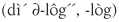

Give me a lever long enough and I shall move the world.
—ARCHIMEDES
We (the authors) didn’t always spend our time noodling over crucial conversations. In fact, we started our research into organizational and personal excellence by studying a slightly different topic. We figured that if we could learn why certain people were more effective than others, then we could learn exactly what they did, clone it, and pass it on to others.
To find the source of success, we started at work. We asked people to identify who they thought were their most effective colleagues. In fact, over the past twenty-five years, we’ve asked over twenty thousand people to identify the individuals in their organizations who could really get things done. We wanted to find those who were not just influential, but who were far more influential than the rest.
Each time, as we compiled the names into a list, a pattern emerged. Some people were named by one or two colleagues. Some found their way onto the lists of five or six people. These were the good at influence, but not good enough to be widely identified as top performers. And then there were the handful who were named thirty or more times. These were the best—the clear opinion leaders in their areas. Some were managers and supervisors. Many were not.
One of the opinion leaders we became particularly interested in meeting was named Kevin. He was the only one of eight vice presidents in his company to be identified as exceedingly influential. We wanted to know why. So we watched him at work.
At first, Kevin didn’t do anything remarkable. In truth, he looked like every other VP. He answered his phone, talked to his direct reports, and continued about his pleasant, but routine, routine.
After trailing Kevin for almost a week, we began to wonder if he really did act in ways that set him apart from others or if his influence was simply a matter of popularity. And then we followed Kevin into a meeting.
Kevin, his peers, and their boss were deciding on a new location for their offices—would they move across town, across the state, or across the country? The first two execs presented their arguments for their top choices, and as expected, their points were greeted by penetrating questions from the full team. No vague claim went unclarified, no unsupported reasoning unquestioned.
Then Chris, the CEO, pitched his preference—one that was both unpopular and potentially disastrous. However, when people tried to disagree or push back on Chris, he responded poorly. Since he was the big boss, he didn’t exactly have to browbeat people to get what he wanted. Instead, he became slightly defensive. First he raised an eyebrow. Then he raised his finger. Finally he raised his voice—just a little. It wasn’t long until people stopped questioning him, and Chris’s inadequate proposal was quietly accepted.
Well almost. That’s when Kevin spoke up. His words were simple enough—something like, “Hey Chris, can I check something out with you?”
The reaction was stunning—everyone in the room stopped breathing. But Kevin ignored the apparent terror of his colleagues and plunged on ahead. In the next few minutes he in essence told the CEO that he appeared to be violating his own decision-making guidelines. He was subtly using his power to move the new offices to his hometown.
Kevin continued to explain what he saw happening, and when he finished the first crucial minutes of this delicate exchange, Chris was quiet for a moment. Then he nodded his head. “You’re absolutely right,” he finally concluded. “I have been trying to force my opinion on you. Let’s back up and try again.”
This was a crucial conversation, and Kevin played no games whatsoever. He didn’t resort to silence like his colleagues, nor did he try to force his arguments on others. As a result, the team chose a far more reasonable location and Kevin’s boss appreciated his candor.
When Kevin was done, one of his peers turned to us and said, “Did you see how he did that? If you want to know how he gets things done, figure out what he just did.”
So we did. In fact, we spent the next twenty-five years discovering what Kevin and people like him do. What typically set them apart from the rest of the pack was their ability to deal with crucial conversations. When talking turned tough and stakes were high, they excelled. But how? Kevin wasn’t that different. He did step up to a tough issue and help the team make a better choice, but what exactly did he do? Did he possess learnable skills, or was what he did more magical than manageable?
To answer these questions, first, let’s explore what Kevin was able to achieve. This will help us see where we’re trying to go. Then we’ll examine the dialogue tools effective communicators routinely use and learn to apply them to our own crucial conversations.
If you’ve seen the movie City Slickers, you may remember a scene where the crusty character Curly explains that if you want to succeed in life you have to do one thing. Then, in typical Hollywood fashion, he explains that he’s not about to tell you what that one thing is. You have to figure it out yourself.
We won’t pull a Curly. We’ll reveal the one thing. When it comes to risky, controversial, and emotional conversations, skilled people find a way to get all relevant information (from themselves and others) out into the open.
That’s it. At the core of every successful conversation lies the free flow of relevant information. People openly and honestly express their opinions, share their feelings, and articulate their theories. They willingly and capably share their views, even when their ideas are controversial or unpopular. It’s the one thing, and it’s precisely what Kevin and the other extremely effective communicators we studied were routinely able to achieve.
Now, to put a label on this spectacular talent—it’s called dialogue.
di.a.logue or di.a.log

nThe free flow of meaning between two or more people.
Despite the fact that we’ve shared the one thing, we’re still left with two questions. First, how does this free flow of meaning lead to success? Second, what can you do to encourage meaning to flow freely?
We’ll explain the relationship between the free flow of meaning and success right here and now. The second question—what you must do to stay in dialogue, no matter the circumstances—takes the rest of the book.
Each of us enters conversations with our own opinions, feelings, theories, and experiences about the topic at hand. This unique combination of thoughts and feelings makes up our personal pool of meaning. This pool not only informs us but also propels our every action.
When two or more of us enter crucial conversations, by definition we don’t share the same pool. Our opinions differ. I believe one thing, you another. I have one history, you another.
People who are skilled at dialogue do their best to make it safe for everyone to add their meaning to the shared pool—even ideas that at first glance appear controversial, wrong, or at odds with their own beliefs. Now, obviously they don’t agree with every idea; they simply do their best to ensure that all ideas find their way into the open.
As the Pool of Shared Meaning grows, it helps people in two ways. First, as individuals are exposed to more accurate and relevant information, they make better choices. In a very real sense, the Pool of Shared Meaning is a measure of a group’s IQ. The larger the shared pool, the smarter the decisions. And even though many people may be involved in a choice, when people openly and freely share ideas, the increased time investment is more than offset by the quality of the decision.
On the other hand, we’ve all seen what happens when the shared pool is dangerously shallow. When people purposefully withhold meaning from one another, individually smart people can do collectively stupid things.
For example, a client of ours shared the following story.
A woman checked into the hospital to have a tonsillectomy, and the surgical team erroneously removed a portion of her foot. How could this tragedy happen? In fact, why is it that ninety-eight thousand hospital deaths each year stem from human error?1 In part because many health-care professionals are afraid to speak their minds. In this case, no less than seven people wondered why the surgeon was working on the foot, but said nothing. Meaning didn’t freely flow because people were afraid to speak up.
Of course, hospitals don’t have a monopoly on fear. In every instance where bosses are smart, highly paid, confident, and out-spoken (i.e., most of the world), people tend to hold back their opinions rather than risk angering someone in a position of power.
On the other hand, when people feel comfortable speaking up and meaning does flow freely, the shared pool can dramatically increase a group’s ability to make better decisions. Consider what happened to Kevin’s group. As everyone on the team began to explain his or her opinion, people formed a more clear and complete picture of the circumstances.
As they began to understand the whys and wherefores of different proposals, they built off one another. Eventually, as one idea led to the next, and then to the next, they came up with an alternative that no one had originally thought of and that all wholeheartedly supported. As a result of the free flow of meaning, the whole (final choice) was truly greater than the sum of the original parts. In short:
The Pool of Shared Meaning
is the birthplace of synergy.
Not only does a shared pool help individuals make better choices, but since the meaning is shared, people willingly act on whatever decisions they make. As people sit through an open discussion where ideas are shared, they take part in the free flow of meaning. Eventually they understand why the shared solution is the best solution, and they’re committed to act. For example, Kevin and the other VPs didn’t buy into their final choice simply because they were involved; they bought in because they understood.
Conversely, when people aren’t involved, when they sit back quietly during touchy conversations, they’re rarely committed to the final decision. Since their ideas remain in their heads and their opinions never make it into the pool, they end up quietly criticizing and passively resisting. Worse still, when others force their ideas into the pool, people have a harder time accepting the information. They may say they’re on board, but then walk away and follow through halfheartedly. To quote Samuel Butler, “He that complies against his will is of his own opinion still.”
The time you spend up front establishing a shared pool of meaning is more than paid for by faster, more committed action later on.
For example, if Kevin and the other leaders had not been committed to their relocation decision, terrible consequences would have followed. Some people would have agreed to move; others would have dragged their feet. Some would have held heated discussions in the hallways. Others would have said nothing and then quietly fought the plan. More likely than not, the team would have been forced to meet again, discuss again, and decide again—since only one person favored the decision and the decision affected everyone.
Now, don’t get us wrong. We’re not suggesting that every decision be made by consensus or that the boss shouldn’t take part in or even make the final choice. We’re simply suggesting that whatever the decision-making method, the greater the shared meaning in the pool, the better the choice—whoever makes it.
Every time we find ourselves arguing, debating, running away, or otherwise acting in an ineffective way, it’s because we don’t know how to share meaning. Instead of engaging in healthy dialogue, we play silly and costly games.
For instance, sometimes we move to silence. We play Salute and Stay Mute. That is, we don’t confront people in positions of authority. Or at home we may play Freeze Your Lover. With this tortured technique we give loved ones the cold shoulder in order to get them to treat us better (what’s the logic in that?).
Sometimes we rely on hints, sarcasm, innuendo, and looks of disgust to make our points. We play the martyr and then pretend we’re actually trying to help. Afraid to confront an individual, we blame an entire team for a problem—hoping the message will hit the right target. Whatever the technique, the overall method is the same. We withhold meaning from the pool. We go to silence.
On other occasions, not knowing how to stay in dialogue, we rely on violence—anything from subtle manipulation to verbal attacks. We act like we know everything, hoping people will believe our arguments. We discredit others, hoping people won’t believe their arguments. And then we use every manner of force to get our way. We borrow power from the boss; we hit people with biased monologues. The goal, of course, is always the same—to compel others to our point of view.
Now, here’s how the various elements fit together. When stakes are high, opinions vary, and emotions run strong, we’re often at our worst. In order to move to our best, we have to find a way to explain what is in each of our personal pools of meaning—especially our high-stakes, sensitive, and controversial opinions, feelings, and ideas—and to get others to share their pools. We have to develop the tools that make it safe for us to discuss these issues and to come to a shared pool of meaning. And when we do, our lives change.
And now for the really good news. The skills required to master high-stakes interactions are quite easy to spot and moderately easy to learn. First consider the fact that a well-handled crucial conversation all but leaps out at you. In fact, when you see someone enter the dangerous waters of a high-stakes, high-emotion, controversial discussion—and the person does a particularly good job—your natural reaction is to step back in awe. “Wow!” is generally the first word out of your mouth. What starts as a doomed discussion ends up with a healthy resolution. It can take your breath away.
More importantly, not only are dialogue skills easy to spot, but they’re also fairly easy to learn. That’s where we’re going next. We’ve isolated and captured the skills of the dialogue-gifted through twenty-five years of nonstop “Wow!” research. First we followed around Kevin and dozens like him. Then, when conversations turned crucial, we took detailed notes. Afterward we compared our observations, tested our hypotheses, and honed our models until we found the skills that consistently explain the success of brilliant communicators. Finally, we combined our philosophies, theories, models, and skills into a package of learnable tools—tools for talking when stakes are high.
Now we’re ready to share what we’ve learned. Stay with us as we explore how to transform crucial conversations from frightening events into interactions that yield success and results. It’s the most important set of skills you’ll ever master.
Here’s what we’ll focus on in the remainder of the book.
First, we’ll explore the tools people use to help create the conditions of dialogue. The focus is on how we think about problem situations and what we do to prepare for them. As we work on ourselves, watch for problems, examine our own thought processes, discover our own styles, and then catch problems before they get out of hand, everyone benefits. As you read on, you will learn how to create conditions in yourself and others that make dialogue the path of least resistance.
Next, we’ll examine the tools for talking, listening, and acting together. This is what most people have in mind when they think of crucial conversations. How do I express delicate feedback? How do I speak persuasively, not abrasively? And how about listening? Or better still, what can we do to get people to talk when they seem nervous? And how do we move from thought to action? As you read on, you will learn the key skills of talking, listening, and acting together.
Finally, we’ll tie all of the theories and skills together by providing both a model and an extended example. Then, to see if you can really do what it takes, we provide seventeen situations that would give most of us fits—even people who are gifted at dialogue. As you read on, you will master the tools for talking when stakes are high.
Audio Lessons from the Authors |
What is dialogue anyway? To hear author Joseph Grenny talk about what dialogue is and why it’s so important in our relationships, download MP3 files from our popular Crucial |
Conversations Audio Companion for FREE today. |